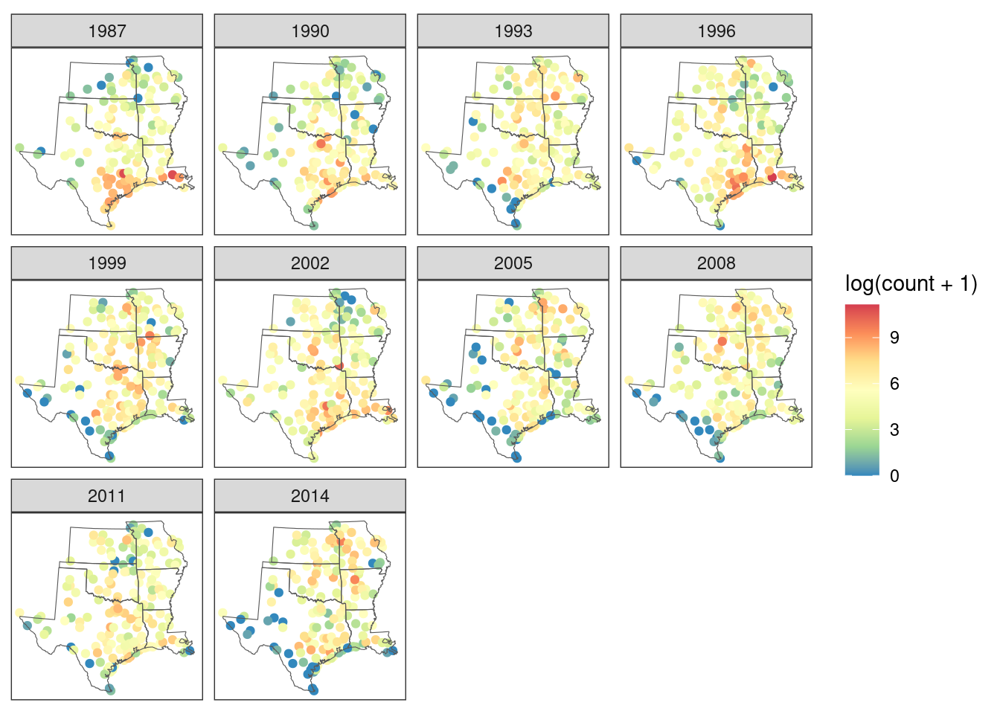
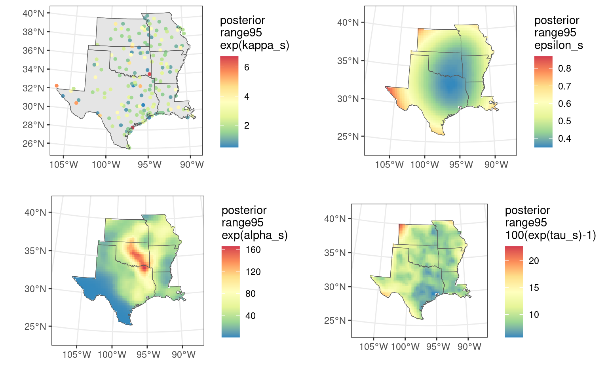

Spatially Varying Coefficient Models with inlabru
Timothy D. Meehan (tmeeha@gmail.com), Elias T. Krainski, Finn Lindgren, and Håvard Rue
Generated on 2023-08-15
Source:vignettes/articles/svc.Rmd
svc.RmdIntroduction
Spatially varying coefficient models (SVCs, Gelfand et al. 2003) are
often used to model data when relationships between dependent and
independent variables are not uniform across space, a common situation
when exploring phenomena across large spatial extents (Finley 2011).
Meehan et al. (2019) described an SVC model to evaluate continent-scaled
variation in bird abundance trends. The SVC model used in that analysis
employed discrete aerial units (100 km grid cells), with spatial
structure described by neighborhood matrices and spatial relationships
described by an intrinsic conditional autoregressive model (Besag 1974).
The online supplement for the paper included code for building the model
using the R-INLA package (Rue et al. 2009) for the
R statistical programming language (R Core Team 2021). Both
the manuscript and code can be accessed at https://github.com/tmeeha/inlaSVCBC.
In this vignette, we will describe how to build an SVC model similar
to that described in Meehan et al. (2019), but within a continuous-space
framework. This model will be computed using the stochastic partial
differential equation (SPDE) approach of Lindgren et al. (2011, 2022),
implemented with the inlabru interface to the
R-INLA package for R. The SPDE approach
employs a computationally efficient approximation of a Gaussian random
field with parameters directly comparable to those of a Matérn
covariance function. The benefits of a continuous-space versus a
discrete-space SVC include the potential for finer resolution estimation
and prediction, a better understanding of the range of spatial
correlation, and a reduction in boundary effects associated with
discrete-space analyses.
We build the model using a subset of the data described in Meehan et al. (2019). Specifically, we use counts of American Robin (Turdus migratorius) from south central North America collected between 1987 and 2016 during the Audubon Christmas Bird Count (CBC). The overall goal of the analysis is to produce spatially explicit estimates of annual relative abundance as well as long-term relative abundance trends for robins that account for spatial and temporal variation in count effort.
Model
The model used to analyze these data assumes that counts come from a negative binomial distribution with an expected count and dispersion parameter. The expected count has a log-linear predictor:
\[\log(\lambda_{st}) = \kappa_{s} + \alpha_s + \epsilon_{s} \log[\text{Effort}_{st}] + \tau_{s} \text{Year}_{st}\]
where the natural log of expected count, \(\log(\lambda_{st})\), at site \(s\) during year \(t\), is modeled with a zero-centered, normally distributed intercept per site, \(\kappa_s\), a spatially varying intercept, \(\alpha_s\), a spatially varying effect of the log of count effort in hours, \(\epsilon_s\), and a spatially varying linear effect of year, \(\tau_s\). The spatially structured effects are modeled as Gaussian random fields with Matérn covariance functions with range and variance parameters.
Model parameters \(\kappa_s\), \(\alpha_s\), \(\epsilon_s\) and \(\tau_s\) are analogous to those in Meehan et al. (2019). For example, \(\kappa_s\) is included to account for site-level differences in counts, possibly due to habitat availability or observer experience. \(\alpha_s\) can be interpreted as an effort-corrected abundance index at year zero. \(\epsilon_s\) is the exponent for a power-law effort-correction function. And \(\tau_s\) is the long-term temporal trend at a given site.
Environment
To get started with data analysis, we set up the environment, by loading some packages, and setting some options.
# libraries
library(maps)
library(ggplot2)
library(sf)
library(terra)
library(tidyterra) # raster plotting
library(tidyr)
library(scales)
library(dplyr)
library(INLA)
library(inlabru)
library(fmesher)
# Note: the 'splancs' package also needs to be installed,
# but doesn't need to be loaded
# set option
select <- dplyr::select
options(scipen = 99999)
options(max.print = 99999)
options(stringsAsFactors = FALSE)Next we define a coordinate reference system (CRS) for spatial analysis and create a base map for later use. The CRS uses the USA Contiguous Albers Equal-Area Conic projection, and is identified by the EPSG code 6703. We modify the CRS slightly to have units of kilometers, so that distances between widespread count sites are not especially large numbers (Krainski et al. 2018).
# define a crs
epsg6703km <- paste(
"+proj=aea +lat_0=23 +lon_0=-96 +lat_1=29.5",
"+lat_2=45.5 +x_0=0 +y_0=0 +datum=NAD83",
"+units=km +no_defs"
)
# make a base map
states <- st_as_sf(maps::map("state", plot = FALSE, fill = TRUE)) %>%
filter(ID %in% c(
"texas", "oklahoma", "kansas", "missouri",
"arkansas", "louisiana"
)) %>%
st_transform(epsg6703km)Import data
Next we import some bird count data from the GitHub repository associated with Meehan et al. (2019), and turn the data set into spatially referenced points. We use a subset of the data (30 years, 6 US states) for this analysis to reduce computing time (~ 1 min). Note that site selection and zero filling, important components of trend analyses, have already been conducted and this is the resulting data set.
The inlabru package contains a pregenerated version of
the data subset, called robins_subset, that can be accessed
with data(robins_subset), to avoid accessing the full data
online. The following code was used to generate the subset:
robins_subset <- read.csv(paste0(
"https://raw.github.com/tmeeha/inlaSVCBC",
"/master/code/modeling_data.csv"
)) %>%
select(
circle, bcr, state, year, std_yr, count, log_hrs,
lon, lat, obs
) %>%
mutate(year = year + 1899) %>%
filter(
state %in% c(
"TEXAS", "OKLAHOMA", "KANSAS", "MISSOURI",
"ARKANSAS", "LOUISIANA"
),
year >= 1987
)We load the data, filter out observation sites with less than 20
years of data, add index variables to uniquely index site and year
information, and transform the coordinates to the
epsg6703km CRS:
data(robins_subset)
count_dat <- robins_subset %>%
mutate(site_idx = as.numeric(factor(paste(circle, lon, lat)))) %>%
group_by(site_idx) %>%
mutate(n_years = n()) %>%
filter(n_years >= 20) %>%
ungroup() %>%
mutate(
std_yr = year - max(year),
obs = seq_len(nrow(.)),
site_idx = as.numeric(factor(paste(circle, lon, lat))),
year_idx = as.numeric(factor(year)),
site_year_idx = as.numeric(factor(paste(circle, lon, lat, year)))
) %>%
st_as_sf(coords = c("lon", "lat"), crs = 4326, remove = FALSE) %>%
st_transform(epsg6703km) %>%
mutate(
easting = st_coordinates(.)[, 1],
northing = st_coordinates(.)[, 2]
) %>%
arrange(circle, year)A rough view of changes in robin relative abundance, which does not account for variation in count effort, can be seen by plotting raw counts per site and year.
# map it
ggplot() +
geom_sf(
data = count_dat %>% filter(year_idx %in% seq(1, 30, 3)),
aes(col = log(count + 1))
) +
geom_sf(data = states, fill = NA) +
coord_sf(datum = NA) +
facet_wrap(~year) +
scale_color_distiller(palette = "Spectral") +
theme_bw()
Make spatial data
Next we use the count data to make a map of distinct count sites and save the coordinates of the sites, unique and across all years, for later spatial modeling and plotting.
SPDE components
Computing a continuous-space model with R-INLA using the
SPDE approach requires construction of four distinct sets of data and
model objects (Blangiardo and Cameletti 2015, Krainski et al. 2018).
First, we create a modeling mesh, which is used to
provide a piecewise linear representation of the continuous spatial
surface, based on a triangulation of the modeled region. Here, the same
mesh will get reused for each of the spatial terms in the model. Second,
we construct an SPDE model object that specifies
properties of the spatial model. Again, we will use the same SPDE object
for each of the spatial terms in the model.
In plain R-INLA, we would also need to create index
vectors and projector matrices (or A matrices as they
are often called). However, in inlabru, these objects are
created automatically, and the user does not need to deal with them
directly. This works by an automatic creation of a
bru_mapper object that knows how to map between mesh nodes
and spatial data locations. Thus, the only two R-INLA
functions needed in the user code of the SPDE modelling steps are
fm_mesh_2d_inla() and inla.spde2.pcmatern(),
and the inla.spde.make.index() and
inla.spde.make.A() functions are only called internally by
the inlabru code itself, or rather
fm_evaluator() is used instead.
Modeling mesh
There are various things to consider when constructing a mesh (Lindgren and Rue 2015, Blangiardo and Cameletti 2015, Krainski et al. 2018, Bakka et al. 2018). In constructing one, we balance a trade-off between capturing fine-scaled features of the Gaussian random field and computing times. Here, we create two non-convex hulls around the count sites, and then build a triangular mesh by specifying minimum and maximum edge lengths within the inner hull, and within the slightly larger outer hull.
# make a two extension hulls and mesh for spatial model
hull <- fm_extensions(
count_dat,
convex = c(200, 500),
concave = c(350, 500)
)
mesh <- fm_mesh_2d_inla(
boundary = hull, max.edge = c(100, 600), # km inside and outside
cutoff = 50, offset = c(100, 300),
crs = fm_crs(count_dat)
) # cutoff is min edge
# plot it
ggplot() +
gg(data = mesh) +
geom_sf(data = site_map, col = "darkgreen", size = 1) +
geom_sf(data = states, fill = NA) +
theme_bw() +
labs(x = "", y = "")SPDE model object
Next we create an SPDE object to define the model smoothness, with
prior distributions for the variance and range parameters, and the mesh.
Here we assume a Gaussian random field characterized with a Matérn
covariance function with penalized complexity priors (Simpson et
al. 2017) for the practical range (distance where spatial correlation
approaches 0.1) and variation explained by the function (Fuglstad et
al. 2019). The prior for the spatial range is set such that the
probability of a range exceeding 500 km is 0.5. The prior for the
variance explained by the spatial effect is set such that the
probability of a standard deviation exceeding 1 is 0.5 (Krainski et
al. 2018). If one wants to constrain this kind of spatial effect to
integrate to zero, constr=TRUE should be added at this
stage.
# make spde
spde <- inla.spde2.pcmatern(
mesh = mesh,
prior.range = c(500, 0.5),
prior.sigma = c(1, 0.5)
)Weighted spatial effects in inlabru
In ordinary R-INLA, it would be necessary to construct
projector matrices for each model component, that would include the
different covariate weightings for each spatial model component. In
inlabru, this can instead be handled by either explicitly
multiplying the spatial random fields with the spatial covariates in the
model formula expression, or by specifying the weights
argument for each model component specification. We will here use the
latter approach, since it is the easiest.
In our model, \(\epsilon_s\) is a
spatially varying effect of the log of count effort. Similarly, \(\tau_s\) is a spatially varying effect of
year, so standardized year (with 1987 = 0) is also specified in the
weights argument. \(\alpha_s\) is also an SVC, but it is a
spatially varying intercept. For intercepts it is not necessary to
specify a constant weight of 1. The model component \(\kappa_{s}\) is linked to each observation
site and is not modeled on the mesh.
Note that the current use of the term ‘weights’ is different from
that often encountered when defining mixed effect models in
R. Here it is used to define covariate value
multiplication, as opposed to importance values for
likelihoods in other contexts.
Data stack for model fitting
In plain R-INLA, we would need to bundle all the model
data and component projector matrix information using the
inla.stack() function. In inlabru, this is
done automatically, so we skip that step.
Model formula
The last required input for the analysis is the model formula, which includes information on the prior for explained variation for the unstructured random intercept. We define the prior for \(\kappa_s\) as a penalized complexity prior (Simpson et al. 2017), set such that the probability of the standard deviation associated with the random effect exceeding 1 is 0.01.
Notice that if one wants to constrain a spatial spde effect to
integrate to zero, it should be added constr=TRUE in the
SPDE model definition rather than in the component definition. As we
want to constrain \(\kappa_s\) and it
is a non-spatial term we can use
constr=TRUE in its corresponding label()
component definition below, which imposes a sum-to-zero constraint.
The model described above is translated to inlabru
modeling syntax as:
# components
svc_components <- ~ -1 +
kappa(site_idx, model = "iid", constr = TRUE, hyper = list(prec = pc_prec)) +
alpha(geometry, model = spde) +
eps(geometry, weights = log_hrs, model = spde) +
tau(geometry, weights = std_yr, model = spde)
# formula, with "." meaning "add all the model components":
svc_formula <- count ~ .Specifying the sf column geometry as input
causes inlabru to extract the spatial coordinate
information for the observation locations from. Alternatively, we could
specify the function st_coordinates instead, but that would
extract the raw coordinates, potentially losing important coordinate
reference system information. Alternatively, we can specify that
CRS-free information explicitly as input, with
cbind(easting, northing) or
st_coordinates(.data.).
Here, we define the response as count, remove the
automatic global intercept with a -1, and then specify the
other terms in the model with label() statements. The first
kappa() statement defines \(\kappa_s\), the site effect, as a normally
distributed and independent (model="iid"), globally
zero-centred (sum to zero constr=TRUE), deviation from
\(\alpha_s\). The second
alpha() statement defines \(\alpha_s\) as a spatially varying intercept
with spatial structure described by the SPDE object called ‘spde’.
Remember that if one wants to constrain this kind of spatial effect to
integrate to zero, constr=TRUE should be added in the SPDE
model definition rather than in the label() arguments. The
third eps() statement defines \(\epsilon_s\) as an SVC for the effect of
count effort, with spatial structure also described by the SPDE object.
The weights for this spatially structured random slope are specified
with the weights=log_hrs argument. The fourth
tau() statement defines \(\tau_s\) as an SVC for the year effect,
with spatial structure described in the SPDE object. The weights for
this spatially structured random slope are specified with the
weights=std_yr argument.
Run model
We estimate the model with a call to bru(). First we set
the option to use the (new) experimental way to do internal
computations, see Van Niekerk et. al. (2022), for the sake of computing
speed and better numerics. In the call to bru(), we give
the model components, and specify an observation likelihood with the
model formula for the negative binomial distribution for the counts, and
define the estimation data. Then we ask inla() to compute
WAIC and CPO (temporarily disabled) to evaluate model fit (also, to save
the information necessary for posterior sampling we need
config=TRUE, but this is automatically set by
bru(), as inlabru::predict() relies on it for
posterior sampling and prediction). For computing speed, we choose to
use the simplified Laplace approximation strategy and Empirical Bayes
estimation. The inla() run for this model takes about 1
minutes on a standard laptop computer. Another option is to use the
Variational Bayes approximation as detailed in Van Niekerk and Rue
(2021) and Van Niekerk et. al. (2022).
Model summaries
Once computation is complete, we look at the initial results to see how things went. First we check the posterior means for the hyperparameters of the model, mainly the variance components and the spatial ranges of the spatially structured parameters.
# view results
res$summary.hyperpar[-1, c(1, 2)]
#> mean sd
#> Precision for kappa 2.41108793 0.51834470
#> Range for alpha 988.82910442 383.82386809
#> Stdev for alpha 1.93100073 0.40042611
#> Range for eps 5308.28162211 3475.14605084
#> Stdev for eps 0.31820498 0.21980262
#> Range for tau 791.35834795 387.94214091
#> Stdev for tau 0.06310527 0.01203448Next we examine some summaries of the random effect estimates, starting with \(\exp(\alpha_s)\), which is effort-corrected relative abundance at year = 0 (1987), given 1 hour of count effort (i.e., log[1]=0).
summary(exp(res$summary.random$alp$"0.5quant")) # exp(alpha) posterior median
#> Min. 1st Qu. Median Mean 3rd Qu. Max.
#> 0.05059 0.98784 2.83327 6.40456 7.70112 53.74568Note that to avoid issues due to \(E[\exp(x)|y]\neq\exp[E(x|y)]\), we use the posterior median instead of the posterior mean.
The summary for \(\epsilon_s\) shows variation in the exponent for the effort correction function across space.
summary(res$summary.random$eps$mean) # epsilon
#> Min. 1st Qu. Median Mean 3rd Qu. Max.
#> 0.6879 0.8849 1.0060 0.9874 1.0745 1.2746The \(\tau_s\) summary shows how long-term, log-linear trends of robin relative abundance have varied across space, from annual decreases of around 10% to annual increases of around 10%.
SVC maps
Next we create maps of \(\alpha_s\), \(\epsilon_s\), and \(\tau_s\) to inspect the spatial structure of these parameter estimates. We start by creating a 25-km mapping grid, and then projecting this mapping grid to the modeling mesh.
# get easting and northing limits
bbox <- fm_bbox(hull[[1]])
grd_dims <- round(c(x = diff(bbox[[1]]), y = diff(bbox[[2]])) / 25)
# make mesh projector to get model summaries from the mesh to the mapping grid
mesh_proj <- fm_evaluator(
mesh,
xlim = bbox[[1]], ylim = bbox[[2]], dims = grd_dims
)Then we populate the mapping grids with parameter estimates (posterior median and range95), turn them into a raster stack, and mask the raster stack to the study area.
# pull data
kappa <- data.frame(
median = exp(res$summary.random$kappa$"0.5quant"),
range95 = exp(res$summary.random$kappa$"0.975quant") -
exp(res$summary.random$kappa$"0.025quant")
)
alph <- data.frame(
median = exp(res$summary.random$alpha$"0.5quant"),
range95 = exp(res$summary.random$alpha$"0.975quant") -
exp(res$summary.random$alpha$"0.025quant")
)
epsi <- data.frame(
median = res$summary.random$eps$"0.5quant",
range95 = (res$summary.random$eps$"0.975quant" -
res$summary.random$eps$"0.025quant")
)
taus <- data.frame(
median = (exp(res$summary.random$tau$"0.5quant") - 1) * 100,
range95 = (exp(res$summary.random$tau$"0.975quant") -
exp(res$summary.random$tau$"0.025quant")) * 100
)
# loop to get estimates on a mapping grid
pred_grids <- lapply(
list(alpha = alph, epsilon = epsi, tau = taus),
function(x) as.matrix(fm_evaluate(mesh_proj, x))
)
# make a terra raster stack with the posterior median and range95
out_stk <- rast()
for (j in 1:3) {
mean_j <- cbind(expand.grid(x = mesh_proj$x, y = mesh_proj$y),
Z = c(matrix(pred_grids[[j]][, 1], grd_dims[1]))
)
mean_j <- rast(mean_j, crs = epsg6703km)
range95_j <- cbind(expand.grid(X = mesh_proj$x, Y = mesh_proj$y),
Z = c(matrix(pred_grids[[j]][, 2], grd_dims[1]))
)
range95_j <- rast(range95_j, crs = epsg6703km)
out_j <- c(mean_j, range95_j)
terra::add(out_stk) <- out_j
}
names(out_stk) <- c(
"alpha_median", "alpha_range95", "epsilon_median",
"epsilon_range95", "tau_median", "tau_range95"
)
out_stk <- terra::mask(out_stk, states, touches = FALSE)Finally, we plot the SVCs with the following code. We plot the posterior median and 95% uncertainty width (“range95”) for \(\exp(\kappa_s)\), \(\exp(\alpha_s)\), \(\epsilon_s\), and \(100(\exp(\tau_s)-1)\).
make_plot_field <- function(data_stk, scale_label) {
ggplot(states) +
geom_sf(fill = NA) +
coord_sf(datum = NA) +
geom_spatraster(data = data_stk) +
labs(x = "", y = "") +
scale_fill_distiller(scale_label,
palette = "Spectral",
na.value = "transparent"
) +
theme_bw() +
geom_sf(fill = NA)
}
make_plot_site <- function(data, scale_label) {
ggplot(states) +
geom_sf() +
coord_sf(datum = NA) +
geom_sf(data = data, size = 1, mapping = aes(colour = value)) +
scale_colour_distiller(scale_label, palette = "Spectral") +
labs(x = "", y = "") +
theme_bw() +
geom_sf(fill = NA)
}
# medians
# fields alpha_s, epsilon_s, tau_s
pa <- make_plot_field(
data_stk = out_stk[["alpha_median"]],
scale_label = "posterior\nmedian\nexp(alpha_s)"
)
pe <- make_plot_field(
data_stk = out_stk[["epsilon_median"]],
scale_label = "posterior\nmedian\nepsilon_s"
)
pt <- make_plot_field(
data_stk = out_stk[["tau_median"]],
scale_label = "posterior\nmedian\n100(exp(tau_s)-1)"
)
# sites kappa_s
ps <- make_plot_site(
data = cbind(site_map, data.frame(value = kappa$median)),
scale_label = "posterior\nmedian\nexp(kappa_s)"
)
# range95
# fields alpha_s, epsilon_s, tau_s
pa_range95 <- make_plot_field(
data_stk = out_stk[["alpha_range95"]],
scale_label = "posterior\nrange95\nexp(alpha_s)"
)
pe_range95 <- make_plot_field(
data_stk = out_stk[["epsilon_range95"]],
scale_label = "posterior\nrange95\nepsilon_s"
)
pt_range95 <- make_plot_field(
data_stk = out_stk[["tau_range95"]],
scale_label = "posterior\nrange95\n100(exp(tau_s)-1)"
)
# sites kappa_s
ps_range95 <- make_plot_site(
data = cbind(site_map, data.frame(value = kappa$range95)),
scale_label = "posterior\nrange95\nexp(kappa_s)"
)
# plot together
multiplot(ps, pa, pe, pt, cols = 2)The map for the posterior mean of \(\tau_s\) shows that robins have decreased in the southern part of the study area and increased in the northern part. This demonstrates how the wintering range of robins is shifting northward as winters become warmer due to climate change.
# plot together
multiplot(ps_range95, pa_range95, pe_range95, pt_range95, cols = 2)
More information
More information on building spatial models using the SPDE approach in R-INLA can be found in Lindgren and Rue (2015), Blangiardo and Camaletti (2015), Bakka et al. (2018), Krainski et al. (2018), and Moraga (2019).
Citations
Bakka, H., Rue, H., Fuglstad, G.A., Riebler, A., Bolin, D., Illian, J., Krainski, E., Simpson, D. and Lindgren, F., 2018. Spatial modeling with R‐INLA: A review. Wiley Interdisciplinary Reviews: Computational Statistics, 10(6), p.e1443.
Besag, J., 1974. Spatial interaction and the statistical analysis of lattice systems. Journal of the Royal Statistical Society: Series B (Methodological), 36(2), pp.192-225.
Blangiardo, M., Cameletti, M., Baio, G. and Rue, H., 2013. Spatial and spatio-temporal models with R-INLA. Spatial and spatio-temporal epidemiology, 4, pp.33-49.
Finley, A.O., 2011. Comparing spatially‐varying coefficients models for analysis of ecological data with non‐stationary and anisotropic residual dependence. Methods in Ecology and Evolution, 2(2), pp.143-154.
Fuglstad, G.A., Simpson, D., Lindgren, F. and Rue, H., 2019. Constructing priors that penalize the complexity of Gaussian random fields. Journal of the American Statistical Association, 114(525), pp.445-452.
Gelfand, A.E., Kim, H.J., Sirmans, C.F. and Banerjee, S., 2003. Spatial modeling with spatially varying coefficient processes. Journal of the American Statistical Association, 98(462), pp.387-396.
Gómez-Rubio, V., 2020. Bayesian inference with INLA. CRC Press.
Krainski, E., Gómez-Rubio, V., Bakka, H., Lenzi, A., Castro-Camilo, D., Simpson, D., Lindgren, F. and Rue, H., 2018. Advanced spatial modeling with stochastic partial differential equations using R and INLA. Chapman and Hall/CRC.
Lindgren, F., Rue, H. and Lindström, J., 2011. An explicit link between Gaussian fields and Gaussian Markov random fields: the stochastic partial differential equation approach. Journal of the Royal Statistical Society: Series B (Statistical Methodology), 73(4), pp.423-498.
Lindgren, F. and Rue, H., 2015. Bayesian spatial modelling with R-INLA. Journal of statistical software, 63, pp.1-25.
Lindgren, F., Bolin, D. and Rue, H., 2022. The SPDE approach for Gaussian and non-Gaussian fields: 10 years and still running. Spatial Statistics, p.100599.
Link, W.A., Sauer, J.R. and Niven, D.K., 2006. A hierarchical model for regional analysis of population change using Christmas Bird Count data, with application to the American Black Duck. The Condor, 108(1), pp.13-24.
Meehan, T.D., Michel, N.L. and Rue, H., 2019. Spatial modeling of Audubon Christmas Bird Counts reveals fine‐scale patterns and drivers of relative abundance trends. Ecosphere, 10(4), p.e02707.
Moraga, P., 2019. Geospatial health data: Modeling and visualization with R-INLA and shiny. CRC Press.
R Core Team (2021). R: A language and environment for statistical computing. R Foundation for Statistical Computing, Vienna, Austria.
Rue, H., Martino, S. and Chopin, N., 2009. Approximate Bayesian inference for latent Gaussian models by using integrated nested Laplace approximations. Journal of the royal statistical society: Series b (statistical methodology), 71(2), pp.319-392.
Simpson, D., Rue, H., Riebler, A., Martins, T.G. and Sørbye, S.H., 2017. Penalising model component complexity: A principled, practical approach to constructing priors. Statistical science, 32(1), pp.1-28.
Soykan, C.U., Sauer, J., Schuetz, J.G., LeBaron, G.S., Dale, K. and Langham, G.M., 2016. Population trends for North American winter birds based on hierarchical models. Ecosphere, 7(5), p.e01351.
Van Niekerk, J. and Rue, H., 2021. Correcting the Laplace Method with Variational Bayes. Journal of Machine Learning Research, Under review.
Van Niekerk, J. and Krainski, E. T. and Rustand, D. and Rue, H., 2022. A new avenue for Bayesian inference with INLA. Submitted.